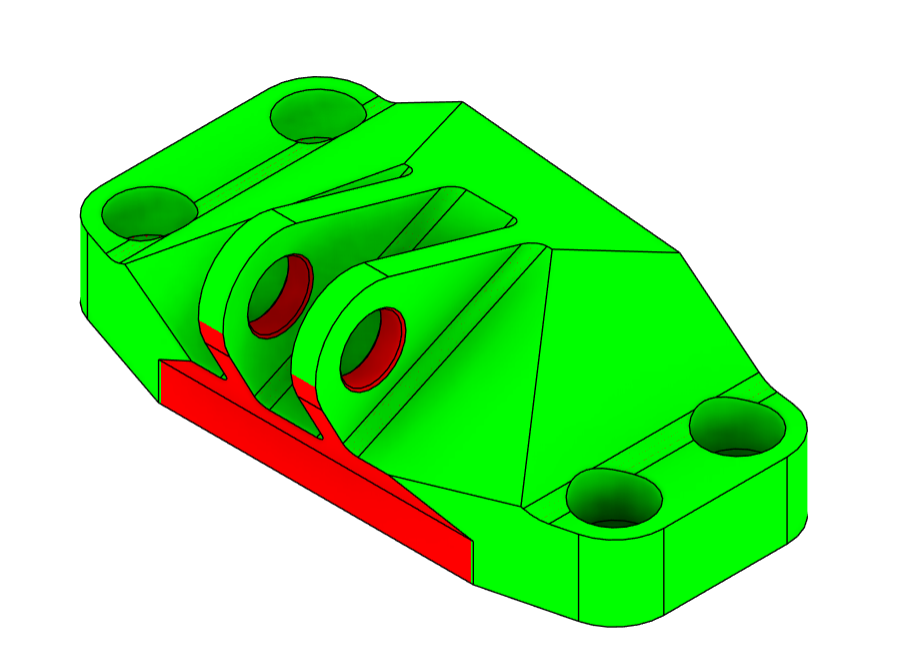
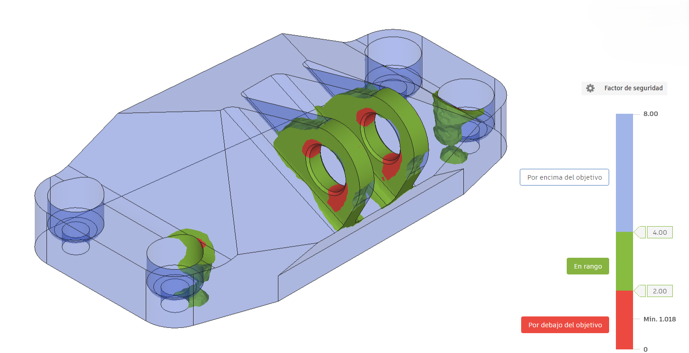
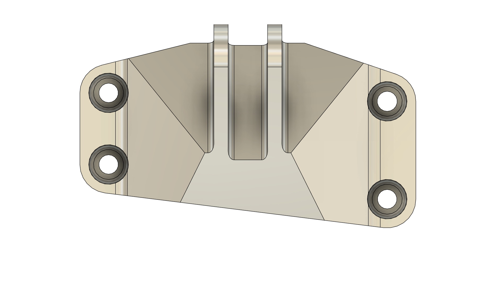

Engineering for Machined Components
Designed to Manufacture. Validated to Perform.
Arroyo Systems helps develop mechanical components under load with less technical uncertainty before manufacturing.
Manufacturing-Led Engineering
We do not design parts. We decide which part makes sense to manufacture.
The same function can be achieved through machining, sheet metal, welded assemblies or different material selections.
The challenge is not creating geometry. It is choosing the right solution before manufacturing.

Earlier Decisions
Cost overruns. Redesigns. Delays. Unnecessarily complex manufacturing.
Redesigns
Delays
Unnecessarily complex manufacturing
Most problems appear once the design is already finished. We aim to solve them earlier. Poor engineering decisions are expensive.
Engineering Trade-Offs
Every decision is a trade-off.
Optimizing one variable often makes the others worse. We balance the technical and manufacturing consequences before committing to a path.

Mechanical Performance
Manufacturing Costs
Manufacturability
Weight
Technical Risk
Capabilities
We do not sell engineering hours.
We reduce uncertainty before manufacturing.
Material selection
Compare practical material paths against performance, cost and manufacturing constraints.
Design development
Develop mechanical concepts around the manufacturing process from the beginning.
Geometry optimization
Refine geometry to improve function while reducing avoidable manufacturing complexity.
Structural validation
Validate components under load before manufacturing decisions become expensive to reverse.
Manufacturing documentation
Translate engineering decisions into clear documentation for production and suppliers.
Outcome
It is not about doing more engineering. It is about making better decisions.

Contact
Engineering for machined components.
Designed to Manufacture. Validated to Perform.
- contact@arroyo-systems.com
- Madrid, Spain